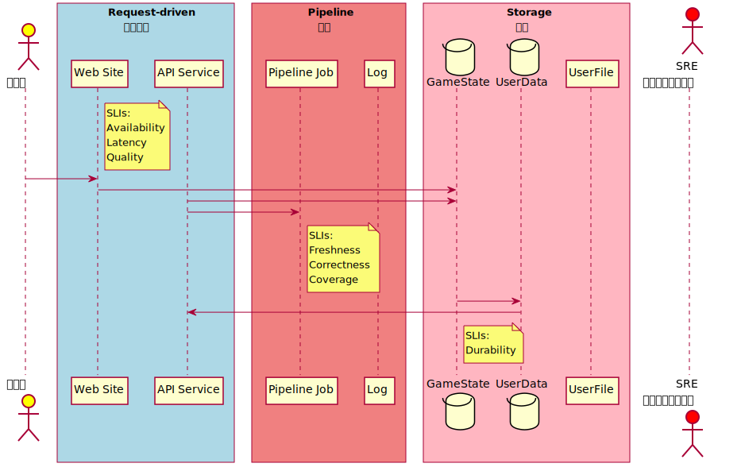

Libra
TOC
- 隨想
- TODO
- Protobuf
- 生成 Google Protocol Buffers 文件
- Protobuf Doc 2019-09-11T17:25:25+08:00
- Table of Contents
- transaction.proto
- transaction_info.proto
- account_state_blob.proto
- events.proto
- validator_public_keys.proto
- vm_errors.proto
- validator_change.proto
- language_storage.proto
- validator_set.proto
- ledger_info.proto
- proof.proto
- get_with_proof.proto
- ---------------- Get single transaction by account
- +
- sequence number
- access_path.proto
- Scalar Value Types
- Protos File Tree
- Protobuf sources
- src:./transaction.proto
- src:./transaction_info.proto
- src:./account_state_blob.proto
- src:./events.proto
- src:./validator_public_keys.proto
- src:./vm_errors.proto
- src:./validator_change.proto
- src:./language_storage.proto
- src:./validator_set.proto
- src:./ledger_info.proto
- src:./proof.proto
- src:./get_with_proof.proto
- src:./access_path.proto
隨想
選 ProtoBuf 型正言順
单一性依赖问题：Libra 如果完全依赖 RUST 语言实现，那么会存在单一依赖问题，如果 RUST 语言出现安全问题，则会波及整个 Libra 系统，这一点可能需要时间来解决。
關於單一依賴的解決速度可能會比其他專案快一點，因 Libra 選型用的是 Google Protocol Buffers (Protobuf) 格式，從 immutability-io/vault-libra: A Vault plugin for Libra 專案出現的時間點可知整合這類已有 Protobuf 規格的專案相對時間會快上許多，除了格式一致讓 Golang 對接 Rust 應用程式較簡易之外，後續要 Java Python Nodejs 要對接或實作也會方便許多。
說到對接方便這件事除了開發，其實也牽涉到運轉處理事件的效率，如 The Site Reliability Workbook Chapter 2 - Implementing SLOs 建議初始的 SLOs Pipeline 管道區，管區裡會接多長與多少段其實開發階段並不一定清楚，平台運轉後遇到事件時可能會有動態的管路配置，如管裡流的是 Protobuf，對於處理事件的 SRE 來說一來上手容易二來工具也多，處理上更有效率。

就公鏈來說每個小型獨立節點一般無設置管路區的必要，有設置管路區需求的是較大型服務商，在收發訊息之間加上各種處理來提供服務。聯盟鏈來說對接的同盟可能都會配管，這時如遇到 hyperledger/fabric-protos 類似的專案，進管前處理與進管後的管道開發管理都會省下不少功夫，可提高整本帳的可靠度。
TODO
- 【行业报告】《关于 Libra 的多方视角与观点汇总》 - 链闻 ChainNews
- LibraBFT 算法简述 - 链闻 ChainNews
- Libra 是又一个星战计划吗？深度分析数字货币对主权国家的冲击 - 链闻 ChainNews
Protobuf
生成 Google Protocol Buffers 文件
libra/types/src/proto at master · libra/libra
git clone https://github.com/libra/libra.git /tmp/src/libra
bash tc.sh --gen-proto-doc /tmp/src/libra/types/src/proto /tmp/output.md
Protobuf Doc 2019-09-11T17:25:25+08:00
Table of Contents
-
- GetAccountStateRequest
- GetAccountStateResponse
- GetAccountTransactionBySequenceNumberRequest
- GetAccountTransactionBySequenceNumberResponse
- GetEventsByEventAccessPathRequest
- GetEventsByEventAccessPathResponse
- GetTransactionsRequest
- GetTransactionsResponse
- RequestItem
- ResponseItem
- UpdateToLatestLedgerRequest
- UpdateToLatestLedgerResponse
transaction.proto
AccountState
Account state as a whole. After execution, updates to accounts are passed in this form to storage for persistence.
| Field | Type | Label | Description |
|---|---|---|---|
| address | bytes | Account address | |
| blob | bytes | Account state blob |
SignedTransaction
A generic structure that represents signed RawTransaction
| Field | Type | Label | Description |
|---|---|---|---|
| signed_txn | bytes | LCS byte code representation of a SignedTransaction |
SignedTransactionWithProof
| Field | Type | Label | Description |
|---|---|---|---|
| version | uint64 | The version of the returned signed transaction. | |
| signed_transaction | SignedTransaction | The transaction itself. | |
| proof | SignedTransactionProof | The proof authenticating the signed transaction. | |
| events | EventsList | The events yielded by executing the transaction, if requested. |
SignedTransactionsBlock
A generic structure that represents a block of transactions originated from a particular validator instance.
| Field | Type | Label | Description |
|---|---|---|---|
| transactions | SignedTransaction | repeated | Set of Signed Transactions |
| validator_public_key | bytes | Public key of the validator that created this block | |
| validator_signature | bytes | Signature of the validator that created this block |
TransactionArgument
An argument to the transaction if the transaction takes arguments
TransactionListWithProof
A list of consecutive transactions with proof. This is mainly used for state synchronization when a validator would request a list of transactions from a peer, verify the proof, execute the transactions and persist them. Note that the transactions are supposed to belong to the same epoch E, otherwise verification will fail.
| Field | Type | Label | Description |
|---|---|---|---|
| transactions | SignedTransaction | repeated | The list of transactions. |
| infos | TransactionInfo | repeated | The list of corresponding TransactionInfo objects. |
| events_for_versions | EventsForVersions | The list of corresponding Event objects (only present if fetch_events was set to true in req) | |
| first_transaction_version | google.protobuf.UInt64Value | If the list is not empty, the version of the first transaction. | |
| proof_of_first_transaction | AccumulatorProof | The proofs of the first and last transaction in this chunk. When this is used for state synchronization, the validator who requests the transactions will provide a version in the request and the proofs will be relative to the given version. When this is returned in GetTransactionsResponse, the proofs will be relative to the ledger info returned in UpdateToLatestLedgerResponse. | |
| proof_of_last_transaction | AccumulatorProof |
TransactionToCommit
Transaction struct to commit to storage
| Field | Type | Label | Description |
|---|---|---|---|
| signed_txn | SignedTransaction | The signed transaction which was executed | |
| account_states | AccountState | repeated | State db updates |
| events | Event | repeated | Events yielded by the transaction. |
| gas_used | uint64 | The amount of gas used. |
TransactionArgument.ArgType
| Name | Number | Description |
|---|---|---|
| U64 | 0 | |
| ADDRESS | 1 | |
| STRING | 2 | |
| BYTEARRAY | 3 |
transaction_info.proto
TransactionInfo
TransactionInfo is the object we store in the transaction accumulator. It
consists of the transaction as well as the execution result of this
transaction. This are later returned to the client so that a client can
validate the tree
| Field | Type | Label | Description |
|---|---|---|---|
| signed_transaction_hash | bytes | Hash of the signed transaction that is stored | |
| state_root_hash | bytes | The root hash of Sparse Merkle Tree describing the world state at the end of this transaction | |
| event_root_hash | bytes | The root hash of Merkle Accumulator storing all events emitted during this transaction. | |
| gas_used | uint64 | The amount of gas used by this transaction. |
account_state_blob.proto
AccountStateBlob
| Field | Type | Label | Description |
|---|---|---|---|
| blob | bytes |
AccountStateWithProof
| Field | Type | Label | Description |
|---|---|---|---|
| version | uint64 | ||
| blob | AccountStateBlob | ||
| proof | AccountStateProof |
events.proto
Event
An event emitted from a smart contract
| Field | Type | Label | Description |
|---|---|---|---|
| key | bytes | ||
| sequence_number | uint64 | ||
| event_data | bytes |
EventWithProof
An event along with the proof for the event
| Field | Type | Label | Description |
|---|---|---|---|
| transaction_version | uint64 | ||
| event_index | uint64 | ||
| event | Event | ||
| proof | EventProof |
EventsForVersions
A list of EventList's, each representing all events for a transaction.
| Field | Type | Label | Description |
|---|---|---|---|
| events_for_version | EventsList | repeated |
EventsList
A list of events.
| Field | Type | Label | Description |
|---|---|---|---|
| events | Event | repeated |
validator_public_keys.proto
ValidatorPublicKeys
Protobuf definition for the Rust struct ValidatorPublicKeys
| Field | Type | Label | Description |
|---|---|---|---|
| account_address | bytes | Validator account address | |
| consensus_public_key | bytes | Consensus public key | |
| network_signing_public_key | bytes | Network signing publick key | |
| network_identity_public_key | bytes | Network identity publick key |
vm_errors.proto
VMStatus
The statuses and errors produced by the VM can be categorized into a couple different types:
- Validation Statuses: all the errors that can (/should) be the result of executing the prologue -- these are primarily used by the vm validator and AC.
- Verification Errors: errors that are the result of performing bytecode verification (happens at the time of publishing).
- VM Invariant Errors: errors that arise from an internal invariant of the VM being violated. These signify a problem with either the VM or bytecode verifier.
- Binary Errors: errors that can occur during the process of deserialization of a transaction.
- Runtime Statuses: errors that can arise from the execution of a transaction (assuming the prologue executes without error). These are errors that can occur during execution due to things such as division by zero, running out of gas, etc. These do not signify an issue with the VM.
| Field | Type | Label | Description |
|---|---|---|---|
| major_status | uint64 | e.g. assertion violation, out of gas | |
| has_sub_status | bool | Any substatus code. e.g. assertion error number | |
| sub_status | uint64 | ||
| has_message | bool | ||
| message | string |
validator_change.proto
ValidatorChangeEventWithProof
This is used to prove validator changes. When a validator is changing, it triggers an event on /validator_change_account/events/sent. To tell the client about validator changes, we query /validator_change_account/events/sent to get all versions that contain validator changes after the version that we are trying to update from. For each of these versions, the old validator set would have signed the ledger info at that version. The client needs this as well as the event results + proof. The client can then verify that these events were under the current tree and that the changes were signed by the old validators (and that the events correctly show which validators are the new validators).
This message represents a single validator change event and the proof that corresponds to it
| Field | Type | Label | Description |
|---|---|---|---|
| ledger_info_with_sigs | LedgerInfoWithSignatures | ||
| event_with_proof | EventWithProof |
language_storage.proto
ModuleId
The unique identifier for a module on the chain.
| Field | Type | Label | Description |
|---|---|---|---|
| address | bytes | ||
| name | string |
validator_set.proto
ValidatorSet
Protobuf definition for the Rust struct ValidatorSet.
| Field | Type | Label | Description |
|---|---|---|---|
| validator_public_keys | ValidatorPublicKeys | repeated |
ledger_info.proto
LedgerInfo
Even though we don't always need all hashes, we pass them in and return them
/ always so that we keep them in sync on the client and don't make the client
/ worry about which one(s) to pass in which cases
/
/ This structure serves a dual purpose.
/
/ First, if this structure is signed by 2f+1 validators it signifies the state
/ of the ledger at version version -- it contains the transaction
/ accumulator at that version which commits to all historical transactions.
/ This structure may be expanded to include other information that is derived
/ from that accumulator (e.g. the current time according to the time contract)
/ to reduce the number of proofs a client must get.
/
/ Second, the structure contains a consensus_data_hash value. This is the
/ hash of an internal data structure that represents a block that is voted on
/ by consensus.
/
/ Combining these two concepts when the consensus algorithm votes on a block B
/ it votes for a LedgerInfo with the version being the latest version that
/ will be committed if B gets 2f+1 votes. It sets consensus_data_hash to
/ represent B so that if those 2f+1 votes are gathered, the block is valid to
/ commit
| Field | Type | Label | Description |
|---|---|---|---|
| version | uint64 | Current latest version of the system | |
| transaction_accumulator_hash | bytes | Root hash of transaction accumulator at this version | |
| consensus_data_hash | bytes | Hash of consensus-specific data that is opaque to all parts of the system other than consensus. This is needed to verify signatures because consensus signing includes this hash | |
| consensus_block_id | bytes | The block id of the last committed block corresponding to this ledger info. This field is not particularly interesting to the clients, but can be used by the validators for synchronization. | |
| epoch_num | uint64 | Epoch number corresponds to the set of validators that are active for this ledger info. The main motivation for keeping the epoch number in the LedgerInfo is to ensure that the client has enough information to verify that the signatures for this info are coming from the validators that indeed form a quorum. Without epoch number a potential attack could reuse the signatures from the validators in one epoch in order to sign the wrong info belonging to another epoch, in which these validators do not form a quorum. The very first epoch number is 0. | |
| timestamp_usecs | uint64 | Timestamp that represents the microseconds since the epoch (unix time) that is generated by the proposer of the block. This is strictly increasing with every block. If a client reads a timestamp > the one they specified for transaction expiration time, they can be certain that their transaction will never be included in a block in the future (assuming that their transaction has not yet been included) | |
| next_validator_set | ValidatorSet | An optional field with the validator set for the next epoch in case it's the last ledger info in the current epoch. |
LedgerInfoWithSignatures
The validator node returns this structure which includes signatures / from each validator to confirm the state. The client needs to only pass / back the LedgerInfo element since the validator node doesn't need to know / the signatures again when the client performs a query, those are only there / for the client to be able to verify the state
| Field | Type | Label | Description |
|---|---|---|---|
| signatures | ValidatorSignature | repeated | Signatures of the root node from each validator |
| ledger_info | LedgerInfo |
ValidatorSignature
| Field | Type | Label | Description |
|---|---|---|---|
| validator_id | bytes | The account address of the validator, which can be used for retrieving its public key during the given epoch. | |
| signature | bytes |
proof.proto
AccountStateProof
The complete proof used to authenticate an account state.
| Field | Type | Label | Description |
|---|---|---|---|
| ledger_info_to_transaction_info_proof | AccumulatorProof | ||
| transaction_info | TransactionInfo | ||
| transaction_info_to_account_proof | SparseMerkleProof |
AccumulatorConsistencyProof
| Field | Type | Label | Description |
|---|---|---|---|
| frozen_subtree_roots | bytes | repeated | The root hashes of the frozen subtrees that form the small accumulator. Note that none of these hashes should be default hash. |
| num_siblings | uint32 | The total number of siblings. | |
| non_default_siblings | bytes | repeated | The non-default siblings. Note that the entire list of siblings always start of zero or more non-default siblings, followed by zero of more default siblings. So given the total number of siblings and the non-default siblings we should be able to construct the entire sibling list. |
AccumulatorProof
| Field | Type | Label | Description |
|---|---|---|---|
| bitmap | uint64 | The bitmap indicating which siblings are default. 1 means non-default and 0 means default. The LSB corresponds to the sibling at the bottom of the accumulator. The leftmost 1-bit corresponds to the sibling at the level just below root level in the accumulator, since this one is always non-default. | |
| non_default_siblings | bytes | repeated | The non-default siblings. The ones near the root are at the beginning of the list. |
EventProof
The complete proof used to authenticate an event.
| Field | Type | Label | Description |
|---|---|---|---|
| ledger_info_to_transaction_info_proof | AccumulatorProof | ||
| transaction_info | TransactionInfo | ||
| transaction_info_to_event_proof | AccumulatorProof |
SignedTransactionProof
The complete proof used to authenticate a signed transaction.
| Field | Type | Label | Description |
|---|---|---|---|
| ledger_info_to_transaction_info_proof | AccumulatorProof | ||
| transaction_info | TransactionInfo |
SparseMerkleProof
| Field | Type | Label | Description |
|---|---|---|---|
| leaf | bytes | This proof can be used to authenticate whether a given leaf exists in the tree or not. In Rust: - If this is Some(HashValue, HashValue) - If the first HashValue equals requested key, this is an inclusion proof and the second HashValue equals the hash of the corresponding account blob. - Otherwise this is a non-inclusion proof. The first HashValue is the only key that exists in the subtree and the second HashValue equals the hash of the corresponding account blob. - If this is None, this is also a non-inclusion proof which indicates the subtree is empty. |
In protobuf, this leaf field should either be - empty, which corresponds to None in the Rust structure. - exactly 64 bytes, which corresponds to Some<(HashValue, HashValue)> in the Rust structure. | | bitmap | bytes | | The bitmap indicating which siblings are default. 1 means non-default and 0 means default. The MSB of the first byte corresponds to the sibling at the top of the Sparse Merkle Tree. The rightmost 1-bit of the last byte corresponds to the sibling at the bottom, since this one is always non-default. | | non_default_siblings | bytes | repeated | The non-default siblings. The ones near the root are at the beginning of the list. |
get_with_proof.proto
How to verify the response as a client: (Note that every response comes in the form of GetWithProofResponse which wraps the inner response elements that correspond to the specific request types. Below we will assume a single request/response type. The verification can be extended as needed for multiple types. Also note that we will use the following notation: resp = GetWithProofResponse and req = GetWithProofRequest). Also note that the following will be considered equivalent for brevity: req.requested_items.get_account_state_request == req.get_account_state_request And, resp.values.get_account_state_response == resp.get_account_state_response
GetAccountStateResponse:
- let state_req = req.requested_items.get_account_state_request;
- let state_resp = resp.values.get_account_state_response;
- Verify that:
- state_req.access_path == state_resp.access_path
- This ensures that the server is responding with the correct access path
- state_req.access_path == state_resp.access_path
- let state_data_hash = Hash(state_resp.value);
- let state_proof = resp.values.proof.state_proof_value.sparse_merkle_proof;
- Validate state_proof using state_data_hash as the leaf
- When verifying the state tree, use: state_root_hash = resp.values.transaction_info.state_root_hash
- Validate accumulator using resp.values.transaction_info as the leaf
- When verifying the accumulator, use: root_hash = resp.ledger_info_with_sigs.ledger_info.ledger_info.txn_root_hash;
- Validate that the transaction root hash submitted in req.known_value.node_value.txn_root_hash exists in the proof for accumulator and that the proof is valid with this hash
- Validate ledger info
- let ledger_info_hash = Hash(resp.ledger_info_with_sigs.ledger_info.ledger_info);
- Verify signatures from resp.ledger_info_with_sigs.signatures are signing ledger_info_hash and that there are >2/3 nodes signing this correctly
- Validate that the timestamp is relatively recent in resp.ledger_info_with_sigs.ledger_info.timestamp
GetAccountTransactionBySequenceNumberResponse:
- Note that other than type completed_transaction, there will be no proof returned since the transaction has not yet been committed. To ensure that a validator is telling the truth about it not being committed yet, a client should query for their account state and verify that their current sequence number is less than what they are searching for with GetAccountTransactionBySequenceNumberResponse
- let txn = resp.get_account_transaction_by_sequence_number_response.transaction.committed_transaction;
- let txn_hash = Hash(txn);
- Verify that resp.proof.transaction_info.signed_transaction_hash == txn_hash
- Validate accumulator using resp.proof.transaction_info as the leaf
- When verifying the accumulator, use: root_hash = resp.ledger_info_with_sigs.ledger_info.ledger_info.txn_root_hash;
- Validate that the transaction root hash submitted in req.known_value.node_value.txn_root_hash exists in the proof for accumulator and that the proof is valid with this hash
- Validate ledger info
- let ledger_info_hash = Hash(resp.ledger_info_with_sigs.ledger_info.ledger_info);
- Verify signatures from resp.ledger_info_with_sigs.signatures are signing ledger_info_hash and that there are >2/3 nodes signing this correctly
- Validate that the timestamp is relatively recent in resp.ledger_info_with_sigs.ledger_info.timestamp
GetTransactionsResponse:
- for txn in resp.get_transactions_response.transactions:
- let txn = txn.committed_transaction;
- let txn_hash = Hash(txn);
- Verify that txn.proof.transaction_info.signed_transaction_hash == txn_hash
- Validate accumulator using txn.proof.transaction_info as the leaf
- When verifying the accumulator, use: root_hash = resp.ledger_info_with_sigs.ledger_info.ledger_info.txn_root_hash;
- Verify that transactions are sequential and none are missing
- Validate ledger info
- let ledger_info_hash = Hash(resp.ledger_info_with_sigs.ledger_info.ledger_info);
- Verify signatures from resp.ledger_info_with_sigs.signatures are signing ledger_info_hash and that there are >2/3 nodes signing this correctly
- Validate that the timestamp is relatively recent in resp.ledger_info_with_sigs.ledger_info.timestamp
- If the number of transactions returned is less than limit for an ascending query or if the requested offset > current version for a descending query, the client should verify that the timestamp in ledger info is relatively recent to determine if it is likely that all transactions available were returned
GetAccountStateRequest
Gets latest state for an account.
| Field | Type | Label | Description |
|---|---|---|---|
| address | bytes | Account for which we are fetching the state. |
GetAccountStateResponse
State information returned by a get account state query.
| Field | Type | Label | Description |
|---|---|---|---|
| account_state_with_proof | AccountStateWithProof | Blob value representing the account state together with proof the client can utilize to verify it. |
GetAccountTransactionBySequenceNumberRequest
---------------- Get single transaction by account + sequence number
Get transactions that altered an account - this includes both sent and received. A user of this should check that the data returned matches what they expect. As an example, a potential attack vector would be something like the following: Alice is buying an apple from Bob. Alice's phone signs a transaction X with sequence number N that pays coins to Bob. Alice transmits this signature to Bob's payment terminal which then submits the transaction and checks its status to see if Alice can be given the apple. However, as Bob is doing this Alice constructs a second transaction X' also with sequence number N. Alice gets that transaction inserted in the blockchain. If Bob isn't thoughtful about how he uses this API he may assume that if he asks for the N'th transaction on Alice's account that when the API returns that this means the transaction has gone through. The point here is that one should be careful in reading too much into "transaction X is on the chain" and focus on the logs, which tell you what the transaction did.
If a client submitted a transaction, they should also verify that the hash of the returned transaction matches what they submitted. As an example, if a client has two wallets that share the same account, they may both submit a transaction at the same sequence number and only one will be committed. A client should never assume that if they receive the response that this transaction was included that it means that this is definitely the transaction that was submitted. They should check that the hash matches what they sent
| Field | Type | Label | Description |
|---|---|---|---|
| account | bytes | Account for which to query transactions | |
| sequence_number | uint64 | ||
| fetch_events | bool | Set to true to fetch events for the transaction at this version |
GetAccountTransactionBySequenceNumberResponse
Transaction information for transactions requested by GetAccountTransactionsRequest
| Field | Type | Label | Description |
|---|---|---|---|
| signed_transaction_with_proof | SignedTransactionWithProof | When the transaction requested is committed, return the committed transaction with proof. | |
| proof_of_current_sequence_number | AccountStateWithProof | When the transaction requested is not committed, we give a proof that shows the current sequence number is smaller than what would have been if the transaction was committed. |
GetEventsByEventAccessPathRequest
Get events that exist on an event access path. In the current world, a user may specify events that were received, events that were sent, or any event that modifies their account
| Field | Type | Label | Description |
|---|---|---|---|
| access_path | AccessPath | ||
| start_event_seq_num | uint64 | The sequence number of the event to start with for this query. Use a sequence number of MAX_INT to represent the latest. | |
| ascending | bool | If ascending is true this query will return up to limit events that were emitted after start_event_seq_num. Otherwise it will return up to limit events before the offset. Both cases are inclusive. | |
| limit | uint64 | Limit number of results |
GetEventsByEventAccessPathResponse
| Field | Type | Label | Description |
|---|---|---|---|
| events_with_proof | EventWithProof | repeated | Returns an event and proof of each of the events in the request. The first element of proofs will be the closest to start_event_seq_num. |
| proof_of_latest_event | AccountStateWithProof | If the number of events returned is less than limit for an ascending query or if start_event_seq_num > the latest seq_num for a descending query, returns the state of the account containing the given access path in the latest state. This allows the client to verify that there are in fact no extra events. |
The LedgerInfoWithSignatures which is on the main UpdateToLatestLedgerResponse can be used to validate this. |
GetTransactionsRequest
Get up to limit transactions starting from start_version.
| Field | Type | Label | Description |
|---|---|---|---|
| start_version | uint64 | The version of the transaction to start with for this query. Use a version of MAX_INT to represent the latest. | |
| limit | uint64 | Limit number of results | |
| fetch_events | bool | Set to true to fetch events for the transaction at each version |
GetTransactionsResponse
| Field | Type | Label | Description |
|---|---|---|---|
| txn_list_with_proof | TransactionListWithProof |
RequestItem
| Field | Type | Label | Description |
|---|---|---|---|
| get_account_state_request | GetAccountStateRequest | ||
| get_account_transaction_by_sequence_number_request | GetAccountTransactionBySequenceNumberRequest | ||
| get_events_by_event_access_path_request | GetEventsByEventAccessPathRequest | ||
| get_transactions_request | GetTransactionsRequest |
ResponseItem
Individual response items to the queries posed by the requests
| Field | Type | Label | Description |
|---|---|---|---|
| get_account_state_response | GetAccountStateResponse | ||
| get_account_transaction_by_sequence_number_response | GetAccountTransactionBySequenceNumberResponse | ||
| get_events_by_event_access_path_response | GetEventsByEventAccessPathResponse | ||
| get_transactions_response | GetTransactionsResponse |
UpdateToLatestLedgerRequest
This API is used to update the client to the latest ledger version and optionally also request 1..n other pieces of data. This allows for batch queries. All queries return proofs that a client should check to validate the data.
Note that if a client only wishes to update to the latest LedgerInfo and receive the proof that this latest ledger extends the client_known_version ledger the client had, they can simply set the requested_items to an empty list.
| Field | Type | Label | Description |
|---|---|---|---|
| client_known_version | uint64 | This is the version the client already trusts. Usually the client should set this to the version it obtained the last time it synced with the chain. If this is the first time ever the client sends a request, it must use the waypoint hard-coded in its software. | |
| requested_items | RequestItem | repeated | The items for which we are requesting data in this API call. |
UpdateToLatestLedgerResponse
Response from getting latest ledger
| Field | Type | Label | Description |
|---|---|---|---|
| response_items | ResponseItem | repeated | Responses to the queries posed by the requests. The proofs generated will be relative to the version of the latest ledger provided below. |
| ledger_info_with_sigs | LedgerInfoWithSignatures | The latest ledger info this node has. It will come with at least 2f+1 validator signatures as well as a proof that shows the latest ledger extends the old ledger the client had. | |
| validator_change_events | ValidatorChangeEventWithProof | repeated | Validator change events from what the client last knew. This is used to inform the client of validator changes from the client's last known version until the current version |
access_path.proto
AccessPath
| Field | Type | Label | Description |
|---|---|---|---|
| address | bytes | ||
| path | bytes |
Scalar Value Types
Protos File Tree
.
├── access_path.proto
├── account_state_blob.proto
├── events.proto
├── get_with_proof.proto
├── language_storage.proto
├── ledger_info.proto
├── proof.proto
├── transaction_info.proto
├── transaction.proto
├── validator_change.proto
├── validator_public_keys.proto
├── validator_set.proto
└── vm_errors.proto
0 directories, 13 files
Protobuf sources
src:./transaction.proto
// Copyright (c) The Libra Core Contributors
// SPDX-License-Identifier: Apache-2.0
syntax = "proto3";
package types;
import "access_path.proto";
import "events.proto";
import "proof.proto";
import "transaction_info.proto";
import "google/protobuf/wrappers.proto";
// An argument to the transaction if the transaction takes arguments
message TransactionArgument {
enum ArgType {
U64 = 0;
ADDRESS = 1;
STRING = 2;
BYTEARRAY = 3;
}
}
// A generic structure that represents signed RawTransaction
message SignedTransaction {
// LCS byte code representation of a SignedTransaction
bytes signed_txn = 5;
}
message SignedTransactionWithProof {
// The version of the returned signed transaction.
uint64 version = 1;
// The transaction itself.
SignedTransaction signed_transaction = 2;
// The proof authenticating the signed transaction.
SignedTransactionProof proof = 3;
// The events yielded by executing the transaction, if requested.
EventsList events = 4;
}
// A generic structure that represents a block of transactions originated from a
// particular validator instance.
message SignedTransactionsBlock {
// Set of Signed Transactions
repeated SignedTransaction transactions = 1;
// Public key of the validator that created this block
bytes validator_public_key = 2;
// Signature of the validator that created this block
bytes validator_signature = 3;
}
// Account state as a whole.
// After execution, updates to accounts are passed in this form to storage for
// persistence.
message AccountState {
// Account address
bytes address = 1;
// Account state blob
bytes blob = 2;
}
// Transaction struct to commit to storage
message TransactionToCommit {
// The signed transaction which was executed
SignedTransaction signed_txn = 1;
// State db updates
repeated AccountState account_states = 2;
// Events yielded by the transaction.
repeated Event events = 3;
// The amount of gas used.
uint64 gas_used = 4;
}
// A list of consecutive transactions with proof. This is mainly used for state
// synchronization when a validator would request a list of transactions from a
// peer, verify the proof, execute the transactions and persist them. Note that
// the transactions are supposed to belong to the same epoch E, otherwise
// verification will fail.
message TransactionListWithProof {
// The list of transactions.
repeated SignedTransaction transactions = 1;
// The list of corresponding TransactionInfo objects.
repeated TransactionInfo infos = 2;
// The list of corresponding Event objects (only present if fetch_events was set to true in req)
EventsForVersions events_for_versions = 3;
// If the list is not empty, the version of the first transaction.
google.protobuf.UInt64Value first_transaction_version = 4;
// The proofs of the first and last transaction in this chunk. When this is
// used for state synchronization, the validator who requests the transactions
// will provide a version in the request and the proofs will be relative to
// the given version. When this is returned in GetTransactionsResponse, the
// proofs will be relative to the ledger info returned in
// UpdateToLatestLedgerResponse.
AccumulatorProof proof_of_first_transaction = 5;
AccumulatorProof proof_of_last_transaction = 6;
}
src:./transaction_info.proto
// Copyright (c) The Libra Core Contributors
// SPDX-License-Identifier: Apache-2.0
syntax = "proto3";
package types;
// `TransactionInfo` is the object we store in the transaction accumulator. It
// consists of the transaction as well as the execution result of this
// transaction. This are later returned to the client so that a client can
// validate the tree
message TransactionInfo {
// Hash of the signed transaction that is stored
bytes signed_transaction_hash = 1;
// The root hash of Sparse Merkle Tree describing the world state at the end
// of this transaction
bytes state_root_hash = 2;
// The root hash of Merkle Accumulator storing all events emitted during this
// transaction.
bytes event_root_hash = 3;
// The amount of gas used by this transaction.
uint64 gas_used = 4;
}
src:./account_state_blob.proto
// Copyright (c) The Libra Core Contributors
// SPDX-License-Identifier: Apache-2.0
syntax = "proto3";
package types;
import "proof.proto";
message AccountStateBlob { bytes blob = 1; }
message AccountStateWithProof {
uint64 version = 1;
AccountStateBlob blob = 2;
AccountStateProof proof = 3;
}
src:./events.proto
// Copyright (c) The Libra Core Contributors
// SPDX-License-Identifier: Apache-2.0
// This file contains proto definitions related to events. Events are emitted
// by smart contract execution. These could include events such as received
// transactions, sent transactions, etc.
syntax = "proto3";
package types;
import "access_path.proto";
import "proof.proto";
// An event emitted from a smart contract
message Event {
bytes key = 1;
uint64 sequence_number = 2;
bytes event_data = 3;
}
// An event along with the proof for the event
message EventWithProof {
uint64 transaction_version = 1;
uint64 event_index = 2;
Event event = 3;
EventProof proof = 4;
}
// A list of events.
message EventsList {
repeated Event events = 1;
}
// A list of EventList's, each representing all events for a transaction.
message EventsForVersions {
repeated EventsList events_for_version = 1;
}
src:./validator_public_keys.proto
// Copyright (c) The Libra Core Contributors
// SPDX-License-Identifier: Apache-2.0
syntax = "proto3";
package types;
// Protobuf definition for the Rust struct ValidatorPublicKeys
message ValidatorPublicKeys {
// Validator account address
bytes account_address = 1;
// Consensus public key
bytes consensus_public_key = 2;
// Network signing publick key
bytes network_signing_public_key = 3;
/// Network identity publick key
bytes network_identity_public_key = 4;
}
src:./vm_errors.proto
// Copyright (c) The Libra Core Contributors
// SPDX-License-Identifier: Apache-2.0
syntax = "proto3";
package types;
import "language_storage.proto";
// The statuses and errors produced by the VM can be categorized into a
// couple different types:
// 1. Validation Statuses: all the errors that can (/should) be
// the result of executing the prologue -- these are primarily used by
// the vm validator and AC.
// 2. Verification Errors: errors that are the result of performing
// bytecode verification (happens at the time of publishing).
// 3. VM Invariant Errors: errors that arise from an internal invariant of
// the VM being violated. These signify a problem with either the VM or
// bytecode verifier.
// 4. Binary Errors: errors that can occur during the process of
// deserialization of a transaction.
// 5. Runtime Statuses: errors that can arise from the execution of a
// transaction (assuming the prologue executes without error). These are
// errors that can occur during execution due to things such as division
// by zero, running out of gas, etc. These do not signify an issue with
// the VM.
message VMStatus {
// e.g. assertion violation, out of gas
uint64 major_status = 1;
// Any substatus code. e.g. assertion error number
bool has_sub_status = 2;
uint64 sub_status = 3;
bool has_message = 4;
string message = 5;
}
src:./validator_change.proto
// Copyright (c) The Libra Core Contributors
// SPDX-License-Identifier: Apache-2.0
syntax = "proto3";
package types;
import "events.proto";
import "ledger_info.proto";
// This is used to prove validator changes. When a validator is changing, it
// triggers an event on /validator_change_account/events/sent. To tell the
// client about validator changes, we query
// /validator_change_account/events/sent to get all versions that contain
// validator changes after the version that we are trying to update from. For
// each of these versions, the old validator set would have signed the ledger
// info at that version. The client needs this as well as the event results +
// proof. The client can then verify that these events were under the current
// tree and that the changes were signed by the old validators (and that the
// events correctly show which validators are the new validators).
//
// This message represents a single validator change event and the proof that
// corresponds to it
message ValidatorChangeEventWithProof {
LedgerInfoWithSignatures ledger_info_with_sigs = 1;
EventWithProof event_with_proof = 2;
}
src:./language_storage.proto
// Copyright (c) The Libra Core Contributors
// SPDX-License-Identifier: Apache-2.0
syntax = "proto3";
package types;
/// The unique identifier for a module on the chain.
message ModuleId {
bytes address = 1;
string name = 2;
}
src:./validator_set.proto
// Copyright (c) The Libra Core Contributors
// SPDX-License-Identifier: Apache-2.0
syntax = "proto3";
package types;
import "validator_public_keys.proto";
// Protobuf definition for the Rust struct ValidatorSet.
message ValidatorSet {
repeated ValidatorPublicKeys validator_public_keys = 1;
}
src:./ledger_info.proto
// Copyright (c) The Libra Core Contributors
// SPDX-License-Identifier: Apache-2.0
syntax = "proto3";
package types;
import "validator_set.proto";
/// Even though we don't always need all hashes, we pass them in and return them
/// always so that we keep them in sync on the client and don't make the client
/// worry about which one(s) to pass in which cases
///
/// This structure serves a dual purpose.
///
/// First, if this structure is signed by 2f+1 validators it signifies the state
/// of the ledger at version `version` -- it contains the transaction
/// accumulator at that version which commits to all historical transactions.
/// This structure may be expanded to include other information that is derived
/// from that accumulator (e.g. the current time according to the time contract)
/// to reduce the number of proofs a client must get.
///
/// Second, the structure contains a `consensus_data_hash` value. This is the
/// hash of an internal data structure that represents a block that is voted on
/// by consensus.
///
/// Combining these two concepts when the consensus algorithm votes on a block B
/// it votes for a LedgerInfo with the `version` being the latest version that
/// will be committed if B gets 2f+1 votes. It sets `consensus_data_hash` to
/// represent B so that if those 2f+1 votes are gathered, the block is valid to
/// commit
message LedgerInfo {
// Current latest version of the system
uint64 version = 1;
// Root hash of transaction accumulator at this version
bytes transaction_accumulator_hash = 2;
// Hash of consensus-specific data that is opaque to all parts of the system
// other than consensus. This is needed to verify signatures because
// consensus signing includes this hash
bytes consensus_data_hash = 3;
// The block id of the last committed block corresponding to this ledger info.
// This field is not particularly interesting to the clients, but can be used
// by the validators for synchronization.
bytes consensus_block_id = 4;
// Epoch number corresponds to the set of validators that are active for this
// ledger info. The main motivation for keeping the epoch number in the
// LedgerInfo is to ensure that the client has enough information to verify
// that the signatures for this info are coming from the validators that
// indeed form a quorum. Without epoch number a potential attack could reuse
// the signatures from the validators in one epoch in order to sign the wrong
// info belonging to another epoch, in which these validators do not form a
// quorum. The very first epoch number is 0.
uint64 epoch_num = 5;
// Timestamp that represents the microseconds since the epoch (unix time) that is
// generated by the proposer of the block. This is strictly increasing with every block.
// If a client reads a timestamp > the one they specified for transaction expiration time,
// they can be certain that their transaction will never be included in a block in the future
// (assuming that their transaction has not yet been included)
uint64 timestamp_usecs = 6;
// An optional field with the validator set for the next epoch in case it's the last
// ledger info in the current epoch.
ValidatorSet next_validator_set = 7;
}
/// The validator node returns this structure which includes signatures
/// from each validator to confirm the state. The client needs to only pass
/// back the LedgerInfo element since the validator node doesn't need to know
/// the signatures again when the client performs a query, those are only there
/// for the client to be able to verify the state
message LedgerInfoWithSignatures {
// Signatures of the root node from each validator
repeated ValidatorSignature signatures = 1;
LedgerInfo ledger_info = 2;
}
message ValidatorSignature {
// The account address of the validator, which can be used for retrieving its
// public key during the given epoch.
bytes validator_id = 1;
bytes signature = 2;
}
src:./proof.proto
// Copyright (c) The Libra Core Contributors
// SPDX-License-Identifier: Apache-2.0
syntax = "proto3";
package types;
import "transaction_info.proto";
message AccumulatorProof {
// The bitmap indicating which siblings are default. 1 means non-default and
// 0 means default. The LSB corresponds to the sibling at the bottom of the
// accumulator. The leftmost 1-bit corresponds to the sibling at the level
// just below root level in the accumulator, since this one is always
// non-default.
uint64 bitmap = 1;
// The non-default siblings. The ones near the root are at the beginning of
// the list.
repeated bytes non_default_siblings = 2;
}
message SparseMerkleProof {
// This proof can be used to authenticate whether a given leaf exists in the
// tree or not. In Rust:
// - If this is `Some(HashValue, HashValue)`
// - If the first `HashValue` equals requested key, this is an inclusion
// proof and the second `HashValue` equals the hash of the
// corresponding account blob.
// - Otherwise this is a non-inclusion proof. The first `HashValue` is
// the only key that exists in the subtree and the second `HashValue`
// equals the hash of the corresponding account blob.
// - If this is `None`, this is also a non-inclusion proof which indicates
// the subtree is empty.
//
// In protobuf, this leaf field should either be
// - empty, which corresponds to None in the Rust structure.
// - exactly 64 bytes, which corresponds to Some<(HashValue, HashValue)>
// in the Rust structure.
bytes leaf = 1;
// The bitmap indicating which siblings are default. 1 means non-default and
// 0 means default. The MSB of the first byte corresponds to the sibling at
// the top of the Sparse Merkle Tree. The rightmost 1-bit of the last byte
// corresponds to the sibling at the bottom, since this one is always
// non-default.
bytes bitmap = 2;
// The non-default siblings. The ones near the root are at the beginning of
// the list.
repeated bytes non_default_siblings = 3;
}
message AccumulatorConsistencyProof {
// The root hashes of the frozen subtrees that form the small accumulator.
// Note that none of these hashes should be default hash.
repeated bytes frozen_subtree_roots = 1;
// The total number of siblings.
uint32 num_siblings = 2;
// The non-default siblings. Note that the entire list of siblings always
// start of zero or more non-default siblings, followed by zero of more
// default siblings. So given the total number of siblings and the non-default
// siblings we should be able to construct the entire sibling list.
repeated bytes non_default_siblings = 3;
}
// The complete proof used to authenticate a signed transaction.
message SignedTransactionProof {
AccumulatorProof ledger_info_to_transaction_info_proof = 1;
TransactionInfo transaction_info = 2;
}
// The complete proof used to authenticate an account state.
message AccountStateProof {
AccumulatorProof ledger_info_to_transaction_info_proof = 1;
TransactionInfo transaction_info = 2;
SparseMerkleProof transaction_info_to_account_proof = 3;
}
// The complete proof used to authenticate an event.
message EventProof {
AccumulatorProof ledger_info_to_transaction_info_proof = 1;
TransactionInfo transaction_info = 2;
AccumulatorProof transaction_info_to_event_proof = 3;
}
src:./get_with_proof.proto
// Copyright (c) The Libra Core Contributors
// SPDX-License-Identifier: Apache-2.0
// This file contains proto definitions for performing queries and getting back
// results with proofs. This is the interface for a client to query data from
// the system. Every query result must include proof so that a client can be
// certain that the data returned is valid. A client must verify this proof to
// ensure that a node isn't lying to them.
// How to verify the response as a client:
// (Note that every response comes in the form of GetWithProofResponse which
// wraps the inner response elements that correspond to the specific request
// types. Below we will assume a single request/response type. The
// verification can be extended as needed for multiple types. Also note that we
// will use the following notation: resp = GetWithProofResponse and req =
// GetWithProofRequest). Also note that the following will be considered
// equivalent for brevity: req.requested_items.get_account_state_request ==
// req.get_account_state_request And, resp.values.get_account_state_response ==
// resp.get_account_state_response
//
// GetAccountStateResponse:
// - let state_req = req.requested_items.get_account_state_request;
// - let state_resp = resp.values.get_account_state_response;
// - Verify that:
// - state_req.access_path == state_resp.access_path
// - This ensures that the server is responding with the correct access
// path
// - let state_data_hash = Hash(state_resp.value);
// - let state_proof = resp.values.proof.state_proof_value.sparse_merkle_proof;
// - Validate state_proof using state_data_hash as the leaf
// - When verifying the state tree, use:
// state_root_hash = resp.values.transaction_info.state_root_hash
// - Validate accumulator using resp.values.transaction_info as the leaf
// - When verifying the accumulator, use:
// root_hash =
// resp.ledger_info_with_sigs.ledger_info.ledger_info.txn_root_hash;
// - Validate that the transaction root hash submitted in
// req.known_value.node_value.txn_root_hash
// exists in the proof for accumulator and that the proof is valid with
// this hash
// - Validate ledger info
// - let ledger_info_hash =
// Hash(resp.ledger_info_with_sigs.ledger_info.ledger_info);
// - Verify signatures from resp.ledger_info_with_sigs.signatures are
// signing
// ledger_info_hash and that there are >2/3 nodes signing this
// correctly
// - Validate that the timestamp is relatively recent in
// resp.ledger_info_with_sigs.ledger_info.timestamp
//
//
// GetAccountTransactionBySequenceNumberResponse:
// - Note that other than type completed_transaction, there will be no proof
// returned
// since the transaction has not yet been committed. To ensure that a
// validator is telling the truth about it not being committed yet, a
// client should query for their account state and verify that their
// current sequence number is less than what they are searching for with
// GetAccountTransactionBySequenceNumberResponse
// - let txn =
// resp.get_account_transaction_by_sequence_number_response.transaction.committed_transaction;
// - let txn_hash = Hash(txn);
// - Verify that resp.proof.transaction_info.signed_transaction_hash == txn_hash
// - Validate accumulator using resp.proof.transaction_info as the leaf
// - When verifying the accumulator, use:
// root_hash =
// resp.ledger_info_with_sigs.ledger_info.ledger_info.txn_root_hash;
// - Validate that the transaction root hash submitted in
// req.known_value.node_value.txn_root_hash
// exists in the proof for accumulator and that the proof is valid with
// this hash
// - Validate ledger info
// - let ledger_info_hash =
// Hash(resp.ledger_info_with_sigs.ledger_info.ledger_info);
// - Verify signatures from resp.ledger_info_with_sigs.signatures are
// signing
// ledger_info_hash and that there are >2/3 nodes signing this
// correctly
// - Validate that the timestamp is relatively recent in
// resp.ledger_info_with_sigs.ledger_info.timestamp
//
//
// GetTransactionsResponse:
// - for txn in resp.get_transactions_response.transactions:
// - let txn = txn.committed_transaction;
// - let txn_hash = Hash(txn);
// - Verify that txn.proof.transaction_info.signed_transaction_hash ==
// txn_hash
// - Validate accumulator using txn.proof.transaction_info as the leaf
// - When verifying the accumulator, use:
// root_hash =
// resp.ledger_info_with_sigs.ledger_info.ledger_info.txn_root_hash;
// - Verify that transactions are sequential and none are missing
// - Validate ledger info
// - let ledger_info_hash =
// Hash(resp.ledger_info_with_sigs.ledger_info.ledger_info);
// - Verify signatures from resp.ledger_info_with_sigs.signatures are
// signing
// ledger_info_hash and that there are >2/3 nodes signing this
// correctly
// - Validate that the timestamp is relatively recent in
// resp.ledger_info_with_sigs.ledger_info.timestamp
// - If the number of transactions returned is less than limit for an ascending
// query
// or if the requested offset > current version for a descending query,
// the client should verify that the timestamp in ledger info is relatively
// recent to determine if it is likely that all transactions available were
// returned
syntax = "proto3";
package types;
import "access_path.proto";
import "account_state_blob.proto";
import "events.proto";
import "ledger_info.proto";
import "transaction.proto";
import "validator_change.proto";
// -----------------------------------------------------------------------------
// ---------------- Update to latest ledger request
// -----------------------------------------------------------------------------
// This API is used to update the client to the latest ledger version and
// optionally also request 1..n other pieces of data. This allows for batch
// queries. All queries return proofs that a client should check to validate
// the data.
//
// Note that if a client only wishes to update to the latest LedgerInfo and
// receive the proof that this latest ledger extends the client_known_version
// ledger the client had, they can simply set the requested_items to an empty
// list.
message UpdateToLatestLedgerRequest {
// This is the version the client already trusts. Usually the client should
// set this to the version it obtained the last time it synced with the
// chain. If this is the first time ever the client sends a request, it must
// use the waypoint hard-coded in its software.
uint64 client_known_version = 1;
// The items for which we are requesting data in this API call.
repeated RequestItem requested_items = 2;
}
message RequestItem {
oneof requested_items {
GetAccountStateRequest get_account_state_request = 1;
GetAccountTransactionBySequenceNumberRequest
get_account_transaction_by_sequence_number_request = 2;
GetEventsByEventAccessPathRequest get_events_by_event_access_path_request =
3;
GetTransactionsRequest get_transactions_request = 4;
}
}
// -----------------------------------------------------------------------------
// ---------------- Update to latest ledger response
// -----------------------------------------------------------------------------
// Response from getting latest ledger
message UpdateToLatestLedgerResponse {
// Responses to the queries posed by the requests. The proofs generated will
// be relative to the version of the latest ledger provided below.
repeated ResponseItem response_items = 1;
// The latest ledger info this node has. It will come with at least 2f+1
// validator signatures as well as a proof that shows the latest ledger
// extends the old ledger the client had.
LedgerInfoWithSignatures ledger_info_with_sigs = 2;
// Validator change events from what the client last knew. This is used to
// inform the client of validator changes from the client's last known version
// until the current version
repeated ValidatorChangeEventWithProof validator_change_events = 3;
}
// Individual response items to the queries posed by the requests
message ResponseItem {
oneof response_items {
GetAccountStateResponse get_account_state_response = 3;
GetAccountTransactionBySequenceNumberResponse
get_account_transaction_by_sequence_number_response = 4;
GetEventsByEventAccessPathResponse get_events_by_event_access_path_response = 5;
GetTransactionsResponse get_transactions_response = 6;
}
}
// -----------------------------------------------------------------------------
// ---------------- Get account state (balance, sequence number, etc.)
// -----------------------------------------------------------------------------
// Gets latest state for an account.
message GetAccountStateRequest {
// Account for which we are fetching the state.
bytes address = 1;
}
// State information returned by a get account state query.
message GetAccountStateResponse {
// Blob value representing the account state together with proof the client
// can utilize to verify it.
AccountStateWithProof account_state_with_proof = 1;
}
// -----------------------------------------------------------------------------
// ---------------- Get single transaction by account + sequence number
// -----------------------------------------------------------------------------
// Get transactions that altered an account - this includes both sent and
// received. A user of this should check that the data returned matches what
// they expect. As an example, a potential attack vector would be something
// like the following: Alice is buying an apple from Bob. Alice's phone signs a
// transaction X with sequence number N that pays coins to Bob. Alice transmits
// this signature to Bob's payment terminal which then submits the transaction
// and checks its status to see if Alice can be given the apple. However, as Bob
// is doing this Alice constructs a second transaction X' also with sequence
// number N. Alice gets that transaction inserted in the blockchain. If Bob
// isn't thoughtful about how he uses this API he may assume that if he asks for
// the N'th transaction on Alice's account that when the API returns that this
// means the transaction has gone through. The point here is that one should be
// careful in reading too much into "transaction X is on the chain" and focus on
// the logs, which tell you what the transaction did.
//
// If a client submitted a transaction, they should also verify that the hash of
// the returned transaction matches what they submitted. As an example, if a
// client has two wallets that share the same account, they may both submit a
// transaction at the same sequence number and only one will be committed. A
// client should never assume that if they receive the response that this
// transaction was included that it means that this is definitely the
// transaction that was submitted. They should check that the hash matches what
// they sent
message GetAccountTransactionBySequenceNumberRequest {
// Account for which to query transactions
bytes account = 1;
uint64 sequence_number = 2;
// Set to true to fetch events for the transaction at this version
bool fetch_events = 3;
}
// Transaction information for transactions requested by
// GetAccountTransactionsRequest
message GetAccountTransactionBySequenceNumberResponse {
// When the transaction requested is committed, return the committed
// transaction with proof.
SignedTransactionWithProof signed_transaction_with_proof = 2;
// When the transaction requested is not committed, we give a proof that
// shows the current sequence number is smaller than what would have been if
// the transaction was committed.
AccountStateWithProof proof_of_current_sequence_number = 3;
}
// -----------------------------------------------------------------------------
// ---------------- Get events by event access path
// -----------------------------------------------------------------------------
// Get events that exist on an event access path. In the current world,
// a user may specify events that were received, events that were sent, or any
// event that modifies their account
message GetEventsByEventAccessPathRequest {
AccessPath access_path = 1;
// The sequence number of the event to start with for this query. Use a
// sequence number of MAX_INT to represent the latest.
uint64 start_event_seq_num = 2;
// If ascending is true this query will return up to `limit` events that were
// emitted after `start_event_seq_num`. Otherwise it will return up to `limit`
// events before the offset. Both cases are inclusive.
bool ascending = 3;
// Limit number of results
uint64 limit = 4;
}
message GetEventsByEventAccessPathResponse {
// Returns an event and proof of each of the events in the request. The first
// element of proofs will be the closest to `start_event_seq_num`.
repeated EventWithProof events_with_proof = 1;
// If the number of events returned is less than `limit` for an ascending
// query or if start_event_seq_num > the latest seq_num for a descending
// query, returns the state of the account containing the given access path
// in the latest state. This allows the client to verify that there are in
// fact no extra events.
//
// The LedgerInfoWithSignatures which is on the main
// UpdateToLatestLedgerResponse can be used to validate this.
AccountStateWithProof proof_of_latest_event = 2;
}
// -----------------------------------------------------------------------------
// ---------------- Get transactions
// -----------------------------------------------------------------------------
// Get up to limit transactions starting from start_version.
message GetTransactionsRequest {
// The version of the transaction to start with for this query. Use a version
// of MAX_INT to represent the latest.
uint64 start_version = 1;
// Limit number of results
uint64 limit = 2;
// Set to true to fetch events for the transaction at each version
bool fetch_events = 3;
}
message GetTransactionsResponse {
TransactionListWithProof txn_list_with_proof = 1;
}
src:./access_path.proto
// Copyright (c) The Libra Core Contributors
// SPDX-License-Identifier: Apache-2.0
syntax = "proto3";
package types;
message AccessPath {
bytes address = 1;
bytes path = 2;
}